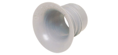

2021年
問題50 空気の流動に関する次の記述のうち，最も不適当なものはどれか．
（1）天井面に沿った冷房による吹出し噴流は，速度が小さいと途中で剥離して降下することがある．
（2）コールドドラフトは，冷たい壁付近などで生じる下降冷気流である．
（3）自由噴流の第3域では，中心軸速度が吹出し口からの距離に反比例して減衰する．
（4）吹出しの影響は遠方まで及ぶのに対し，吸込みの影響は吸込み口付近に限定される．
（5）通常の窓の流量係数は，約1.0である．
2021年
問題50 正解（5） 頻出度AAA
流量係数は，通常の窓で0.6～0.7程度となる（理想的なベルマウス（2021-50-1図）などの場合に≒1で，1を超えることはない）．
2021-50-1図 ベルマウス

出典 モノタロウ（メーカー：古河電気工業）
https://www.monotaro.com/g/04630739/#
開口部前後の圧力差（換気力）を\(P\)［Pa］とすると，開口部を通過する風量\(Q\)［m3/s］は一般的に次式で求めることができる. \[Q=\alpha A \sqrt{\frac{2}{\rho}\cdot P}\]
流量係数 \(\alpha\) とは，オリフィスや弁などの実流量/理論流量の比のことで，流入口から流出口までの全ての抵抗を考慮した係数である．外部風に対する窓などの場合は，開口面積\(A\)［m2］に対して，\(\alpha A\)を相当開口面積という．
-(3) 吹出し口からの自由噴流は，2021-50-2図に示すように周囲の空気を巻き込んで拡がりながら減速していく．
2021-50-2 自由噴流
噴流の中心軸速度の減衰傾向により，吹出し口からの距離\(x\)に対して4つの領域に区分して表される（2021-51-1表）．
2021-51-1表 自由噴流の4領域
| 第1域 | \(V_1 =V_0\) | 吹出し速度\(V_0\)が維持される領域 |
| 第2域 | \(V_2 \propto \frac{1}{\sqrt{x}}\) | 距離の平方根に反比例 |
| 第3域 | \(V_3 = \frac{1}{x}\) | 距離に反比例 |
| 第4域 | \(V_4 \lt 0.25{\rm m/s}\) | 減速が進んで静穏気流と区別できなくなる領域 |
自由噴流は，吹き出した位置の近くに吹き出し方向と平行な天井や壁などがあると，到達距離が長くなる（その極端な場合がダクトである）．
中心軸速度が一定速度まで低下する距離を到達距離と呼ぶ．ドラフト防止の観点から，到達距離や拡散半径を定義する風速として0.25m/sを用いることが多い
-(4) 吸込み気流には吹出し気流のような指向性がなく，吸込み口全面から均一に吸い込む一様流となる．又，吸込み口に近い領域を除き，点状の吸込み（点源吸込み）とみなせるので，吸込み気流速度は吸込み口からの距離の2乗に反比例して急速に減衰．したがって吹出しに比べて吸込み気流の周囲への影響は吸込み口付近に限定される．